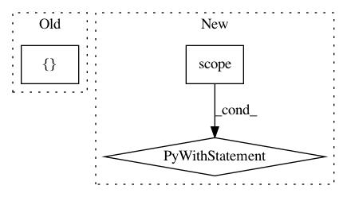

dcf116a1be143290c5c4094b2ed051d333b1e29a,opennmt/training.py,Trainer,__call__,#Trainer#Any#Any#Any#Any#Any#Any#Any#,27
Before Change
iterator = iter(dataset)
gradients = []
variables = []
@tf.function
def _step():
source, target = next(iterator)
After Change
tf.get_logger().warn("Model already reached train_steps = %d. Exiting.", max_step)
return
with self._strategy.scope():
self._model.create_variables(optimizer=self._optimizer)
dataset = self._strategy.experimental_distribute_dataset(dataset)
iterator = iter(dataset)
variables = self._model.variables
gradients = []
for variable in variables:
In pattern: SUPERPATTERN
Frequency: 3
Non-data size: 3
Instances
Project Name: OpenNMT/OpenNMT-tf
Commit Name: dcf116a1be143290c5c4094b2ed051d333b1e29a
Time: 2019-07-01
Author: guillaume.klein@systrangroup.com
File Name: opennmt/training.py
Class Name: Trainer
Method Name: __call__
Project Name: tensorflow/models
Commit Name: b9c1d1ca228819c212d0f1b227bebd3a0fb3e263
Time: 2019-05-28
Author: sheleztt@gmail.com
File Name: official/transformer/v2/transformer_main.py
Class Name: TransformerTask
Method Name: train
Project Name: tensorflow/models
Commit Name: 90d1a0bbbca309628e9e8ddc285ca1bf33913eff
Time: 2020-11-06
Author: rathodv@google.com
File Name: research/object_detection/model_lib_v2.py
Class Name:
Method Name: eval_continuously